Summary and scope
wigglescout is an R library that allows you to calculate
summary values across bigWig files and BED files and visualize them in a
genomics-relevant manner. It is based on broadly used libraries such as
rtracklayer and GenomicRanges, among others
for calculation, and mostly ggplot2 for visualization. You
can look at the DESCRIPTION file to get more information
about all the libraries that make this one possible.
There are also many other tools whose functionality overlaps a little
or much with wigglescout, but there was no single tool that
included all that I needed. The aim of this library is therefore not to
replace any of those tools, or to provide a silver-bullet solution to
genomics data analysis, but to provide a comprehensive, yet simple
enough set of tools focused on bigWig files that can be used entirely
from the R environment without switching back and forth across
tools.
Other tools and libraries for akin purposes that you may be looking for include: deepTools, SeqPlots, bwtools, wiggletools, and the list is endless!
wigglescout allows you to summarize and visualize the
contents of bigWig files in two main ways:
- Genome-wide. Genome is partitioned on equally-sized bins and their aggregated value is calculated. Useful to get a general idea of the signal distribution without looking at specific places.
- Across sets of loci. This can be either summarized categories, or individual values, as in genome-wide analyses.
wigglescout functionality is built in two layers. Names
of functions that calculate values over bigWig files start with
bw_. These return GRanges objects when
possible, data.frame objects otherwise (i.e. when values
are summarized over some category, genomic location is lost in this
process).
On the other hand, functions that plot such values and that usually
make internal use of bw_ functions, start with
plot_.
About bundled data
This package comes with a set of small files to show functionality.
These have been built from a published data from Simon Elsässer’s lab
and correspond to a H3.3 and H3K9me3 ChIP + input
(GSE149080), subset across a 500kbp genomic region:
chr15-102600000-103100000, which overlaps with the
HOXC gene cluster. A ChromHMM annotation has also been subset
to overlap with such region.
library(ggplot2)
library(rtracklayer)
library(GenomicRanges)
library(wigglescout)
h33_chip <- system.file("extdata", "sample_H33_ChIP.bw", package = "wigglescout")
h3k9me3_chip <- system.file("extdata", "sample_H3K9me3_ChIP.bw", package = "wigglescout")
input_chip <- system.file("extdata", "sample_Input.bw", package = "wigglescout")
genes <- system.file("extdata", "sample_genes_mm9.bed", package = "wigglescout")
chromhmm <- system.file("extdata", "sample_chromhmm.bed", package = "wigglescout")
locus <- GRanges(seqnames = "chr15", IRanges(102600000, 103100000))All these values are paths to bigWig and BED files.
Quick start
Here is a small example of what you can do with
wigglescout. Imagine you want to take a look at how values
are distributed overall in your bigwig files, genome-wide:
plot_bw_bins_violin(
c(h33_chip, h3k9me3_chip),
bin_size = 2000,
labels = c("H3.3", "H3K9me3"),
remove_top = 0.001,
selection = locus # Plot can be subset to a certain GRanges.
)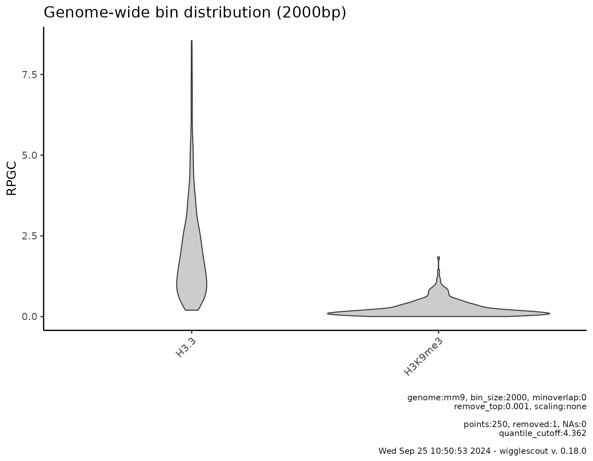
For transparency and reproducibility, plots show relevant underlying
values by default, such as parameters used and calculated values: how
many NA values were found, if any, how many points were
excluded from the plot due to quantile cutoff, and so on. Note also that
in this case the quantile cutoff seems low, but it is because top
elements are removed according to mean in all samples.
Note also that the bin size chosen, 2000 is somewhat
small for genome-wide analyses (it will take long runtime, see the
“Performance and runtime” section at the end of the document for more
details), but it can be done in this case due to the use of
selection parameter, which restricts the bin analysis to a
certain locus.
You could also be interested in checking out how are certain
loci behaving in comparison with the global distribution. You
can do so providing a highlight parameter:
plot_bw_bins_violin(
c(h33_chip, h3k9me3_chip),
bin_size = 2000,
labels = c("H3.3", "H3K9me3"),
remove_top = 0.001,
highlight = genes,
selection = locus # Plot can be subset to a certain GRanges.
)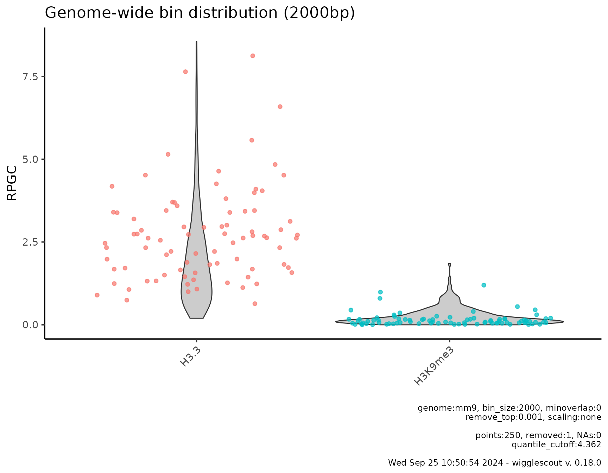
Here you see highlighted the bins that overlap with the loci in the
genes file.
You could also want to pairwise compare the bins. You can do so by plotting a scatterplot:
plot_bw_bins_scatter(
h33_chip,
h3k9me3_chip,
bin_size = 2000,
remove_top = 0.001,
highlight = genes,
highlight_label = "Genes",
selection = locus # Plot can be subset to a certain GRanges.
)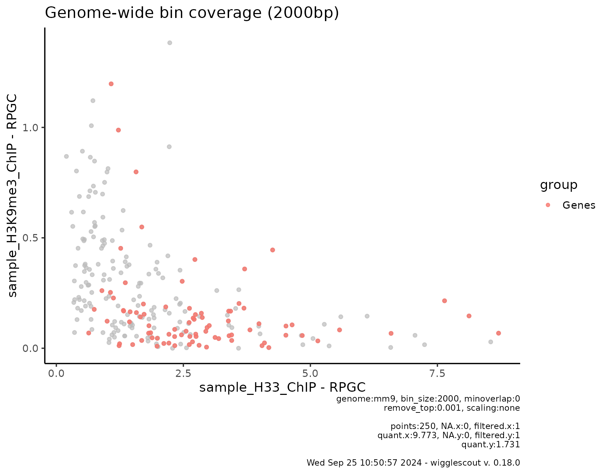
In real cases where you are plotting the full genome-wide set of bins, which can be in the tens or hundreds of thousands data points, there can be a lot of overplotting and it might be difficult to see where the majority of those are. For this, you can just plot a 2d histogram instead:
plot_bw_bins_density(
h33_chip,
h3k9me3_chip,
bin_size = 20000,
plot_binwidth = 0.05
)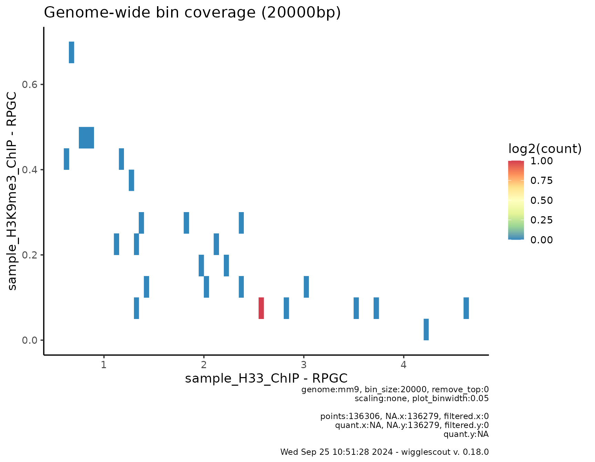
You may be interested in looking at the signal just at the genes instead:
plot_bw_loci_scatter(
h33_chip,
h3k9me3_chip,
loci = genes
)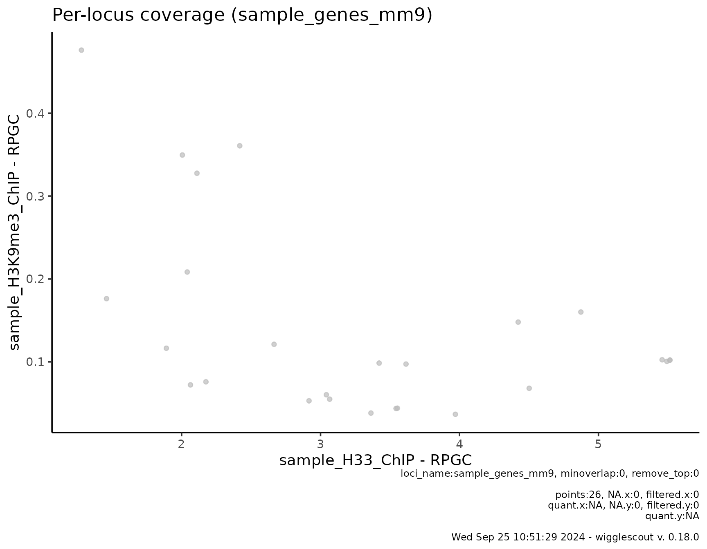
You can also check how these two signal behave globally in a more
meaningful way, i.e. in relation with genomic annotations. You can do
this with bw_loci_summary_heatmap:
# ChromHMM is a genome-wide annotation according to epigenetics marks. Each
# locus is tagged by a category. And the amount of categories must be limited.
# In this case, it is fifteen.
chrom_values <- import(chromhmm, format = "BED")
head(chrom_values)
#> GRanges object with 6 ranges and 2 metadata columns:
#> seqnames ranges strand | name score
#> <Rle> <IRanges> <Rle> | <character> <numeric>
#> [1] chr15 102602601-102606600 * | 12_Heterochrom 0
#> [2] chr15 102606601-102607600 * | 11_Repressed 0
#> [3] chr15 102615401-102615800 * | 15_Insulator 0
#> [4] chr15 102615801-102616800 * | 11_Repressed 0
#> [5] chr15 102616801-102626600 * | 12_Heterochrom 0
#> [6] chr15 102626601-102627600 * | 11_Repressed 0
#> -------
#> seqinfo: 1 sequence from an unspecified genome; no seqlengths
plot_bw_loci_summary_heatmap(
c(h33_chip, h3k9me3_chip),
loci = chromhmm
)In a more detailed way, you can look at the signal profile at the
given genes, using plot_bw_profile:
plot_bw_profile(
c(h33_chip, h3k9me3_chip, input_chip),
loci = genes,
labels = c("H3.3", "H3K9me3", "Input")
)Still, these profiles are an average of 28 loci. So you may be interested in looking at the individual profiles, which you can do with a heatmap view:
plot_bw_heatmap(
h33_chip,
loci = genes
)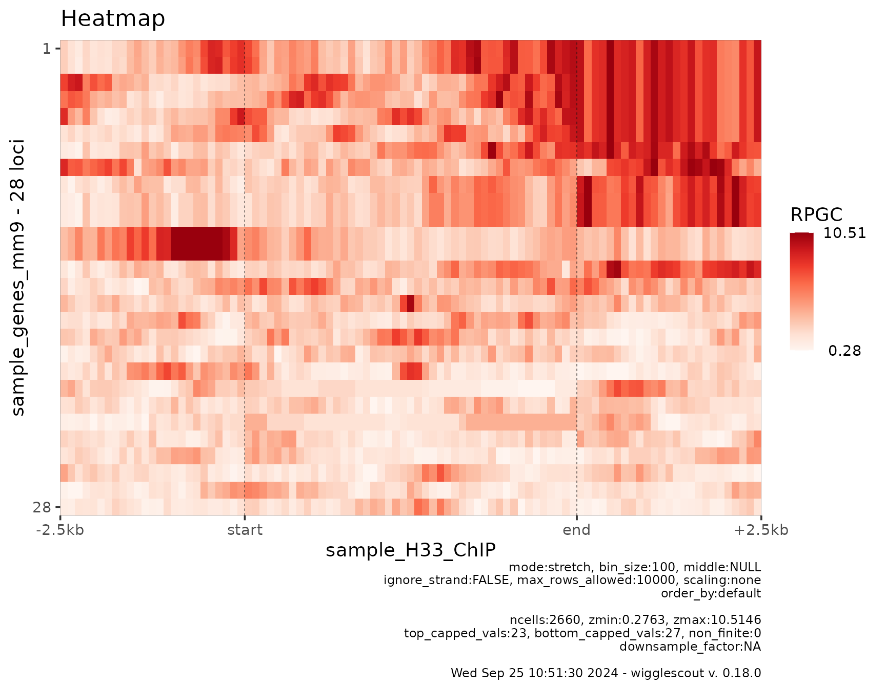
In a nutshell, these are the type of things you can do with
wigglescout. Each of these functions have many parameters
that allow you to fine tune the results. You can look at that in more
detail in the section below.
Functionality to calculate the values without plotting them is also provided, so if you want to plot something different that is not provided as an out-of-the-box function, you can still use this library for that.
Calculating functions
bigWig data can be summarized genome-wide using calculation
functions: bw_bins bw_loci,
bw_heatmap or bw_profile.
Genome-wide analysis
bw_bins function returns a GRanges object
where each entry is a locus of length bin_size and its
score is the mean coverage.
Note: Small bin sizes (< 5000bp) take longer to run.
# Several bwfiles can be provided at once
bw_bins(c(h33_chip, input_chip),
bin_size = 2000,
genome = "mm9",
selection = locus)
#> GRanges object with 251 ranges and 2 metadata columns:
#> seqnames ranges strand | sample_H33_ChIP sample_Input
#> <Rle> <IRanges> <Rle> | <numeric> <numeric>
#> [1] chr15 102598001-102600000 * | 0.548169 0.999076
#> [2] chr15 102600001-102602000 * | 2.382783 0.987250
#> [3] chr15 102602001-102604000 * | 1.872876 0.793113
#> [4] chr15 102604001-102606000 * | 0.640021 0.720190
#> [5] chr15 102606001-102608000 * | 1.035948 1.134485
#> ... ... ... ... . ... ...
#> [247] chr15 103090001-103092000 * | 1.33303 0.961300
#> [248] chr15 103092001-103094000 * | 1.04270 0.977078
#> [249] chr15 103094001-103096000 * | 1.47173 1.212554
#> [250] chr15 103096001-103098000 * | 1.44952 1.117081
#> [251] chr15 103098001-103100000 * | 1.34690 0.749071
#> -------
#> seqinfo: 35 sequences from an unspecified genome; no seqlengthsIt is also possible to provide a list of bigWig files to be used as background to normalize the bin values to. For instance, in the previous case, one could want to use the input values to normalize the H3.3 ChIP data:
bw_bins(h33_chip, bg_bwfiles = input_chip,
bin_size = 2000,
genome = "mm9",
selection = locus)
#> GRanges object with 251 ranges and 1 metadata column:
#> seqnames ranges strand | sample_H33_ChIP
#> <Rle> <IRanges> <Rle> | <numeric>
#> [1] chr15 102598001-102600000 * | 0.548676
#> [2] chr15 102600001-102602000 * | 2.413555
#> [3] chr15 102602001-102604000 * | 2.361423
#> [4] chr15 102604001-102606000 * | 0.888684
#> [5] chr15 102606001-102608000 * | 0.913143
#> ... ... ... ... . ...
#> [247] chr15 103090001-103092000 * | 1.38670
#> [248] chr15 103092001-103094000 * | 1.06716
#> [249] chr15 103094001-103096000 * | 1.21375
#> [250] chr15 103096001-103098000 * | 1.29760
#> [251] chr15 103098001-103100000 * | 1.79810
#> -------
#> seqinfo: 35 sequences from an unspecified genome; no seqlengthsIf you want to get the log2 ratio sample / input, select
norm_mode = "log2fc":
bw_bins(h33_chip, bg_bwfiles = input_chip,
bin_size = 2000,
genome = "mm9",
selection = locus,
norm_mode = "log2fc")
#> GRanges object with 251 ranges and 1 metadata column:
#> seqnames ranges strand | sample_H33_ChIP
#> <Rle> <IRanges> <Rle> | <numeric>
#> [1] chr15 102598001-102600000 * | -0.865973
#> [2] chr15 102600001-102602000 * | 1.271160
#> [3] chr15 102602001-102604000 * | 1.239656
#> [4] chr15 102604001-102606000 * | -0.170258
#> [5] chr15 102606001-102608000 * | -0.131087
#> ... ... ... ... . ...
#> [247] chr15 103090001-103092000 * | 0.4716506
#> [248] chr15 103092001-103094000 * | 0.0937752
#> [249] chr15 103094001-103096000 * | 0.2794686
#> [250] chr15 103096001-103098000 * | 0.3758455
#> [251] chr15 103098001-103100000 * | 0.8464701
#> -------
#> seqinfo: 35 sequences from an unspecified genome; no seqlengthsnorm_mode is set to "fc" by default, which
means it shows fold change sample / input, if input (background) is
provided.
Supported genomes
bw_bins function is based on tileGenome
function from GenomicRanges, which requires information
about chromosome length. This is obtained relying on function
Seqinfo from GenomeInfoDb package. So, in
theory, any genome ID that would return a Seqinfo object by
doing Seqinfo(genome="your_genome") should work.
Locus-based analysis
These functions are useful when you have some genomic annotations you want to look at, rather than general genome-wide trends.
Individual loci
To calculate values on a locus specific manner you can use
bw_loci function. For instance, we can look at the genes at
this region:
bw_loci(c(h33_chip, input_chip), loci = genes)
#> GRanges object with 26 ranges and 3 metadata columns:
#> seqnames ranges strand | sample_H33_ChIP sample_Input
#> <Rle> <IRanges> <Rle> | <numeric> <numeric>
#> [1] chr15 102751562-102759245 + | 2.91694 0.989028
#> [2] chr15 102767284-102768948 + | 3.61492 1.082491
#> [3] chr15 102774493-102778377 - | 3.97043 1.135737
#> [4] chr15 102784957-102787132 + | 2.17507 1.122432
#> [5] chr15 102797227-102802328 + | 1.45977 1.072421
#> ... ... ... ... . ... ...
#> [22] chr15 103078643-103082118 - | 5.51339 1.22775
#> [23] chr15 103078643-103083241 - | 5.49223 1.25069
#> [24] chr15 103078643-103083583 - | 5.45826 1.25206
#> [25] chr15 103078643-103085870 - | 4.87355 1.23020
#> [26] chr15 103078643-103088834 - | 4.42227 1.20272
#> name
#> <character>
#> [1] Hoxc13
#> [2] Hoxc12
#> [3] Hotair
#> [4] Hoxc11
#> [5] Hoxc10
#> ... ...
#> [22] Nfe2
#> [23] Nfe2
#> [24] Nfe2
#> [25] Nfe2
#> [26] Nfe2
#> -------
#> seqinfo: 1 sequence from an unspecified genome; no seqlengthsMany of the options available for bw_bins are shared
with bw_loci, so you can also use background bigWig
files:
bw_loci(h33_chip, bg_bwfiles = input_chip, loci = genes)
#> GRanges object with 26 ranges and 2 metadata columns:
#> seqnames ranges strand | sample_H33_ChIP name
#> <Rle> <IRanges> <Rle> | <numeric> <character>
#> [1] chr15 102751562-102759245 + | 2.94930 Hoxc13
#> [2] chr15 102767284-102768948 + | 3.33944 Hoxc12
#> [3] chr15 102774493-102778377 - | 3.49591 Hotair
#> [4] chr15 102784957-102787132 + | 1.93782 Hoxc11
#> [5] chr15 102797227-102802328 + | 1.36119 Hoxc10
#> ... ... ... ... . ... ...
#> [22] chr15 103078643-103082118 - | 4.49064 Nfe2
#> [23] chr15 103078643-103083241 - | 4.39137 Nfe2
#> [24] chr15 103078643-103083583 - | 4.35942 Nfe2
#> [25] chr15 103078643-103085870 - | 3.96159 Nfe2
#> [26] chr15 103078643-103088834 - | 3.67690 Nfe2
#> -------
#> seqinfo: 1 sequence from an unspecified genome; no seqlengthsA name column is provided if the given BED file includes
loci IDs.
You can also provide GRanges objects instead of
BED files:
genes_granges <- rtracklayer::import(genes, format = "BED")
bw_loci(h33_chip, bg_bwfiles = input_chip, loci = genes_granges)
#> GRanges object with 26 ranges and 2 metadata columns:
#> seqnames ranges strand | sample_H33_ChIP name
#> <Rle> <IRanges> <Rle> | <numeric> <character>
#> [1] chr15 102751562-102759245 + | 2.94930 Hoxc13
#> [2] chr15 102767284-102768948 + | 3.33944 Hoxc12
#> [3] chr15 102774493-102778377 - | 3.49591 Hotair
#> [4] chr15 102784957-102787132 + | 1.93782 Hoxc11
#> [5] chr15 102797227-102802328 + | 1.36119 Hoxc10
#> ... ... ... ... . ... ...
#> [22] chr15 103078643-103082118 - | 4.49064 Nfe2
#> [23] chr15 103078643-103083241 - | 4.39137 Nfe2
#> [24] chr15 103078643-103083583 - | 4.35942 Nfe2
#> [25] chr15 103078643-103085870 - | 3.96159 Nfe2
#> [26] chr15 103078643-103088834 - | 3.67690 Nfe2
#> -------
#> seqinfo: 1 sequence from an unspecified genome; no seqlengthsAggregated loci
It is also possible to aggregate values by some kind of category.
This is useful for BED files where ID is not an individual
entity but rather a category, for instance, ChromHMM annotations:
chrom_ranges <- import(chromhmm)
chrom_ranges
#> GRanges object with 164 ranges and 2 metadata columns:
#> seqnames ranges strand | name score
#> <Rle> <IRanges> <Rle> | <character> <numeric>
#> [1] chr15 102602601-102606600 * | 12_Heterochrom 0
#> [2] chr15 102606601-102607600 * | 11_Repressed 0
#> [3] chr15 102615401-102615800 * | 15_Insulator 0
#> [4] chr15 102615801-102616800 * | 11_Repressed 0
#> [5] chr15 102616801-102626600 * | 12_Heterochrom 0
#> ... ... ... ... . ... ...
#> [160] chr15 103086201-103088200 * | 2_Weak_Txn 0
#> [161] chr15 102627601-102636000 * | 12_Heterochrom 0
#> [162] chr15 102891201-102891600 * | 10_Poised_Promoter 0
#> [163] chr15 103017601-103040000 * | 1_Txn_Elongation 0
#> [164] chr15 102758201-102761800 * | 11_Repressed 0
#> -------
#> seqinfo: 1 sequence from an unspecified genome; no seqlengthsIt is possible to get a single value per category using
aggregate_by parameter.
# If aggregate_by is not provided, you get a non-aggregated GRanges
bw_loci(h33_chip,
bg_bwfiles = input_chip,
loci = chrom_ranges,
aggregate_by = "mean")
#> sample_H33_ChIP
#> 1_Txn_Elongation 4.089008
#> 2_Weak_Txn 2.438608
#> 4_Poised_Enhancer 3.298239
#> 5_Active_Promoter 3.807038
#> 6_Strong_Enhancer 4.691568
#> 7_Active_Promoter 5.561953
#> 8_Strong_Enhancer 6.381945
#> 9_Strong_Enhancer 3.320948
#> 9_Txn_Transition 3.458106
#> 10_Poised_Promoter 2.863107
#> 11_Repressed 1.961251
#> 12_Heterochrom 1.038954
#> 14_Heterochrom 3.597231
#> 15_Insulator 2.400263Note: In this case you will not get a
GRanges object but a data.frame.
For these calculations you always get some kind of
average per locus. However, different ways of treating
the average values are available by changing the
aggregate_by parameter:
-
true_mean: This calculates a mean adding up all the values included per locus. It is most meaningful when loci represent categories rather than biological entities. -
mean: This calculates a mean-of-means instead, where each locus mean value is calculated and the mean of this distribution of means is returned as a result. -
median: This calculates a median-of-means. It is useful to perform an analysis that is more robust to outliers, but it does not work well with sparse data.
Profile averages
You may be interested in the shape the signal takes
across a set of loci. This is calculated by
bw_profile. This function takes each locus in the
provided bed file and slices it into a fixed number of bins (this is
determined by bin_size parameter). Each bin is aggregated
together across loci.
profile <- bw_profile(h33_chip, loci = genes, bin_size = 100)
head(profile)
#> mean sderror median index sample
#> 1 2.651766 0.4211416 1.868056 1 sample_H33_ChIP
#> 2 2.353699 0.3952149 1.744718 2 sample_H33_ChIP
#> 3 2.372053 0.4093088 1.675340 3 sample_H33_ChIP
#> 4 2.516681 0.2644566 2.112161 4 sample_H33_ChIP
#> 5 2.288359 0.2839340 1.683047 5 sample_H33_ChIP
#> 6 2.415918 0.3109912 1.837221 6 sample_H33_ChIPNote:. bw_profile returns data as long
format, since it returns more than one value per data point. You get:
mean, standard error, median value per point. Each point is represented
by index. This index determines its bin.
You can also provide upstream and
downstream base pairs values to include in this
calculation.
profile <- bw_profile(h33_chip, loci = genes, bin_size = 100,
upstream = 500, downstream = 500)
head(profile)
#> mean sderror median index sample
#> 1 3.428869 0.5597654 2.405090 1 sample_H33_ChIP
#> 2 3.949016 0.6592606 2.949832 2 sample_H33_ChIP
#> 3 3.247899 0.4771775 2.590096 3 sample_H33_ChIP
#> 4 3.229546 0.4894977 2.058201 4 sample_H33_ChIP
#> 5 3.079227 0.4333806 2.497594 5 sample_H33_ChIP
#> 6 3.639487 0.3295900 3.067325 6 sample_H33_ChIPAdditionally, you can use mode parameter to define how
these locus are aligned before binning. Available modes are:
start, end, center (align the
loci around these points) or stretch which anchors features
start to end and stretches them when length is
different.
Per-locus profiles
This shape created by bw_profile function is still an
average. So you may be interested on a per-locus profile value. This is
what you get with bw_heatmap. bw_heatmap
returns a matrix where each row is a locus and each column
is a bin. The rest of parameters are analogous to
bw_profile:
mat <- bw_heatmap(h33_chip, loci = genes, bin_size = 1000,
upstream = 5000, downstream = 5000)
# Note that bw_heatmap returns a list of matrices, so it supports arrays of
# bwfiles as input as well.
head(mat[[1]])
#> [,1] [,2] [,3] [,4] [,5] [,6] [,7]
#> [1,] 1.284604 1.3293102 1.7112652 2.8632013 3.007691 2.800395 1.766877
#> [2,] 4.952701 6.5925578 6.4507772 5.3514131 3.370813 2.863804 3.339249
#> [3,] 1.817719 1.8833939 2.0797163 1.5973820 3.622250 5.756086 3.083041
#> [4,] 1.666320 2.4688960 1.5384674 1.5898725 1.831000 2.566131 1.285138
#> [5,] 1.640442 2.2717496 1.9870765 1.9248061 2.705879 2.634167 1.318919
#> [6,] 1.259195 0.9254259 0.8669583 0.9295532 2.033445 2.275877 1.419363
#> [,8] [,9] [,10] [,11] [,12] [,13] [,14]
#> [1,] 3.3833293 4.3805848 1.667400 1.561681 3.661995 4.761350 6.651459
#> [2,] 3.0416741 5.1382823 5.887521 9.196965 4.561860 3.057636 3.688586
#> [3,] 2.7693828 4.2945841 4.607247 3.440608 3.096550 7.539874 8.274333
#> [4,] 2.6849959 2.1768526 2.917202 1.981451 1.685489 5.213727 2.688018
#> [5,] 0.9578958 0.7213599 1.690166 2.632981 2.310449 1.297612 2.311900
#> [6,] 2.3248209 3.5973599 3.592973 1.099763 1.261885 4.124952 3.420550General shared options
Each wigglescout function has a different set of
parameters. You can check the documentation with ?
operator: ?bw_bins.
Here are a few that are commonly appearing in many of the functions:
-
labels: This parameter gives name to the value column of thedata.frameorGRangesobject obtained. By default the names correspond to the file names. -
remove_top: Exclude a certain top quantile of the returning object. This value must be in [0, 1] and by default is 0 (no values removed). Underneath, threshold value is calculated byquantilefunction and used as a threshold, where the exact value is included (values <= threshold are returned). If the calculated data structure has more than one column (i.e. multiple files are provided), quantiles are calculated overrowMeans. This prioritizes cases where outliers are such in more than one sample. In the case whereNAvalues are found, these are also dropped ifremove_top > 0. -
per_locus_stat: Aggregating function per locus. This is an interface with the underlyingrtracklayersummary function. It defaults tomeanand it is not recommended to change it.
Plotting functions
Plots can be made with functions:
-
plot_bw_bins_scatter. A genome-wide bin-based scatterplot. Needsgenomeandbin_sizeparameters. -
plot_bw_loci_scatter. A locus-based scatterplot. Needs alocifile orGRangesobject. -
plot_bw_bins_violin. A genome-wide bin-based violinplot. Needsgenomeandbin_sizeparameters. -
plot_bw_loci_summary_heatmap. Summarized heatmap over a categorized BED file. This works great with annotations like ChromHMM, but other BED files can be used, as long as their name field is meaningful (provides a category). An example could be agenes.bedfile where genes are labelled according to expression, low, med, high. -
plot_bw_profile. A profile plot over a set of loci. -
plot_bw_heatmap. A per-locus heatmap.
As you may have noticed, loci functions take as
parameter a loci value, which can be a BED file or a
GRanges object. If you provide a GRanges
object, chances are that you need to provide a label, as
there is no way to infer this from the GRanges object. On
the other hand, whenever bigWig or BED files are provided, they are
labeled by default with their names.
You can find more detailed information about these below.
Genome-wide plots
Bin-based genome-wide analysis is currently supported in two formats:
-
plot_bw_bins_violin. Makes a violin plot of one or more bigWig files. -
plot_bw_bins_scatter. Makes a scatter plot of two different bigWig files against each other.
Both plot types allow for background bigWig signal to be provided (i.e. input).
Violin plots
For a set of bigWig files, it is possible to visualize the genome-wide signal distribution. For example:
plot_bw_bins_violin(h33_chip, bin_size = 2000, selection = locus)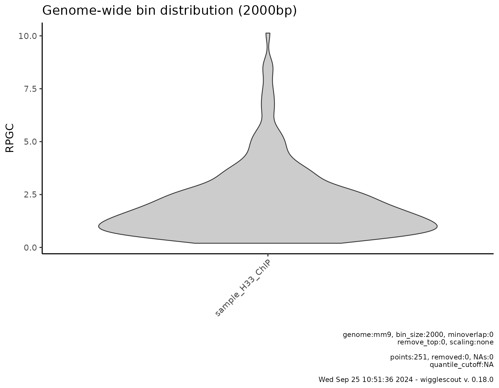
Note that bin_size parameter influences the time any of
these functions take to run. Reasonable resolution for this is 5000 or
10000.
It is possible to plot several bigWig files at a time:
plot_bw_bins_violin(c(h33_chip, input_chip), bin_size = 2000, selection = locus)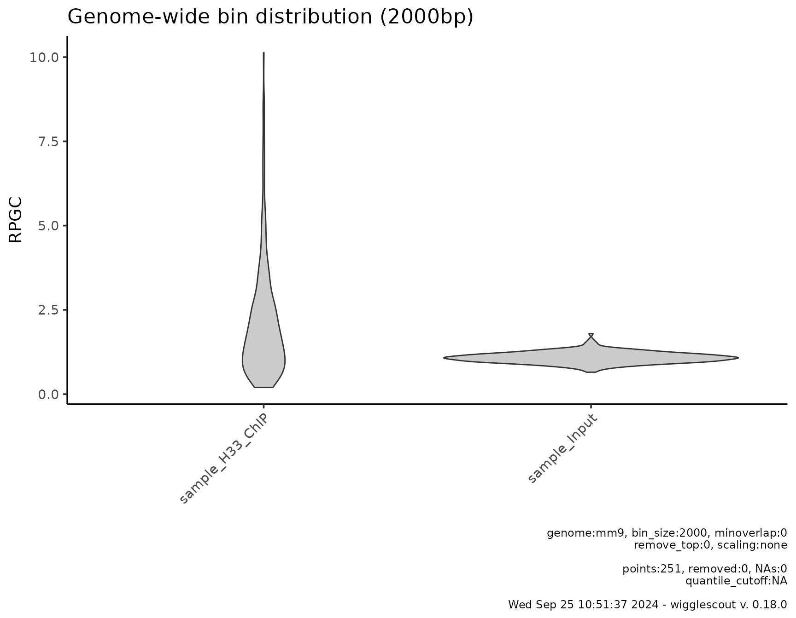
Additionally, one can highlight bins that overlap with a certain set
of interest loci. This is done via the highlight
parameter:
plot_bw_bins_violin(
c(h33_chip, input_chip),
bin_size = 2000,
highlight = genes,
highlight_color = c("red", "red"), # It is possible to provide different colors
selection = locus
)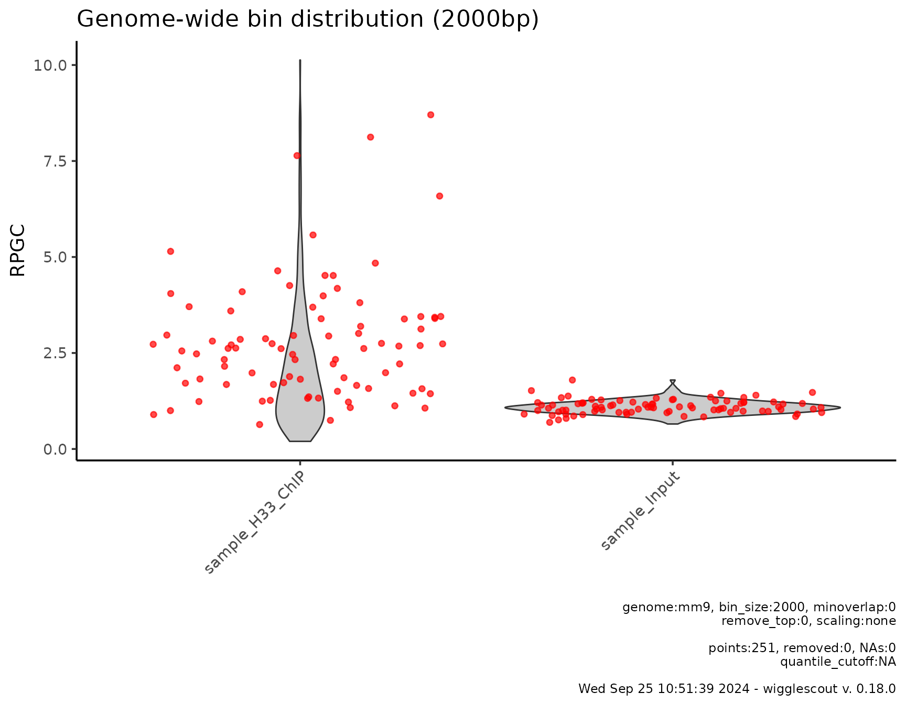
It is also possible to provide a list of bigWig files to be used as background to normalize the bin values to. For instance, in the previous case, one could want to use the input values to normalize the H3.3 ChIP data:
# bg_bwfiles parameter is set now to input_chip
plot_bw_bins_violin(
h33_chip,
bg_bwfiles = input_chip,
bin_size = 2000,
highlight = genes,
highlight_color = c("red"),
selection = locus
)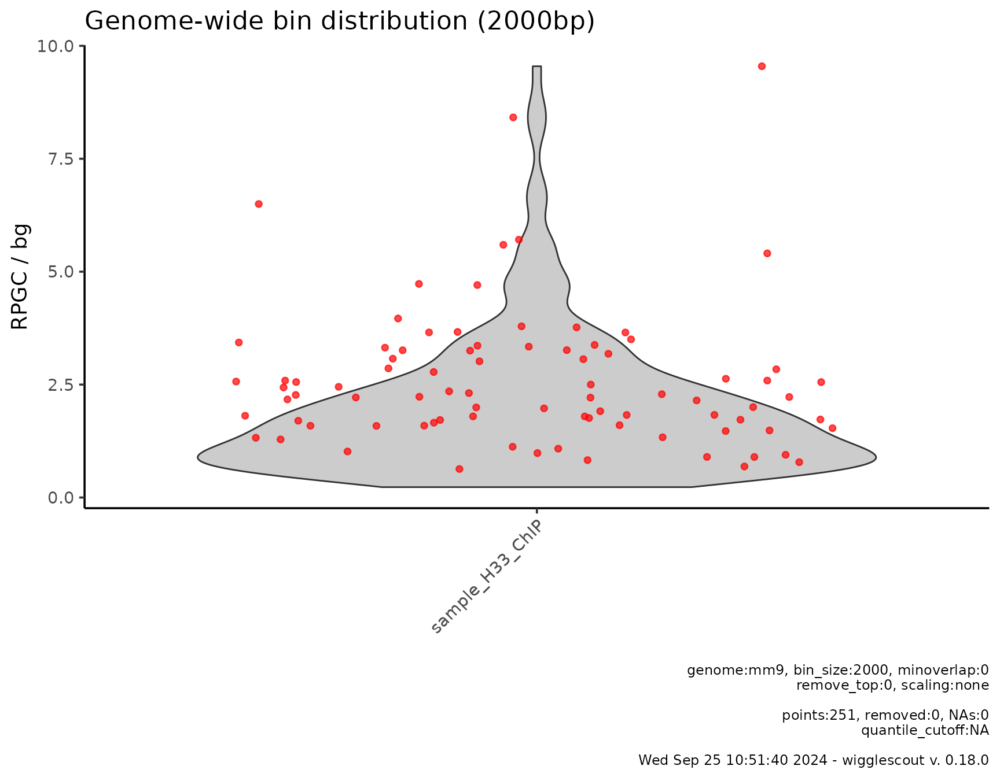
If norm_mode is provided, it is possible to
log-transform these values as well:
# bg_bwfiles parameter is set now to input_chip
plot_bw_bins_violin(
h33_chip,
bg_bwfiles = input_chip,
bin_size = 2000,
highlight = genes,
highlight_color = c("#000088"), # Colors can be also HTML codes
norm_mode = "log2fc",
selection = locus
)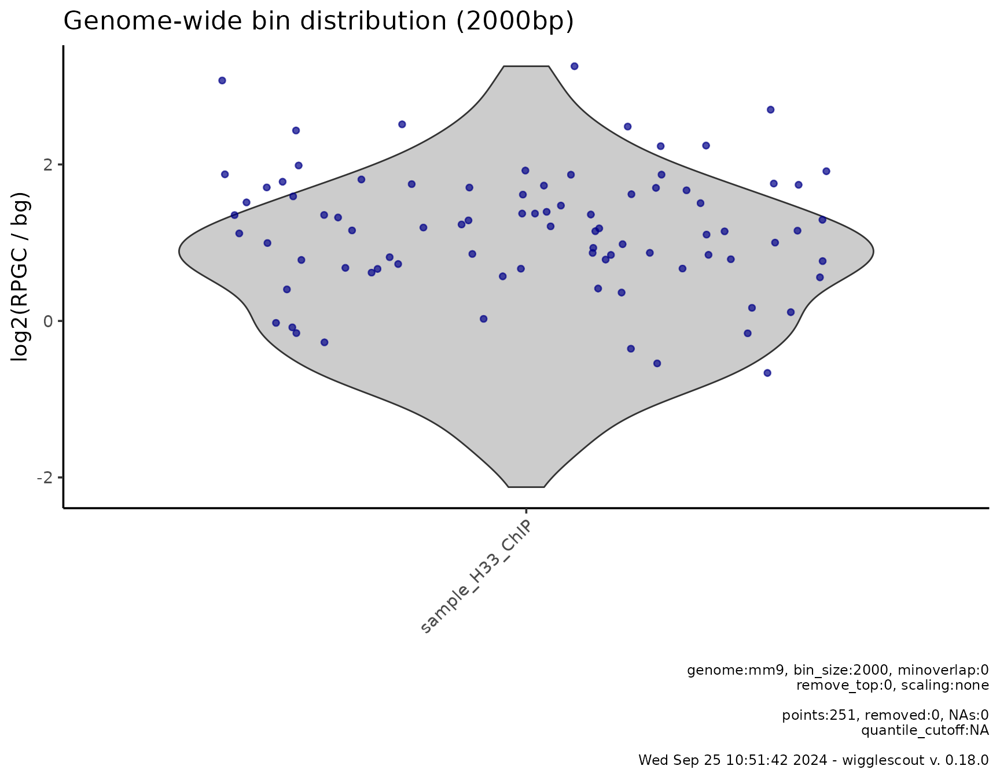
Genome-wide scatterplots
You can compare two signals against each other on a scatter plot. To
do so, you can use plot_bw_bins_scatter. This function
works very similarly to plot_bw_bins_violin but instead of
accepting an array of bigWig files, it accepts separate x
and y parameters and the corresponding optional
bg_x and bg_y, norm_mode_x,
norm_mode_y. You can see more details in the function
documentation.
One example would be looking at H3.3 versus H3K9me3 in this sample data:
plot_bw_bins_scatter(
x = h33_chip,
y = h3k9me3_chip,
bin_size = 2000,
selection = locus
)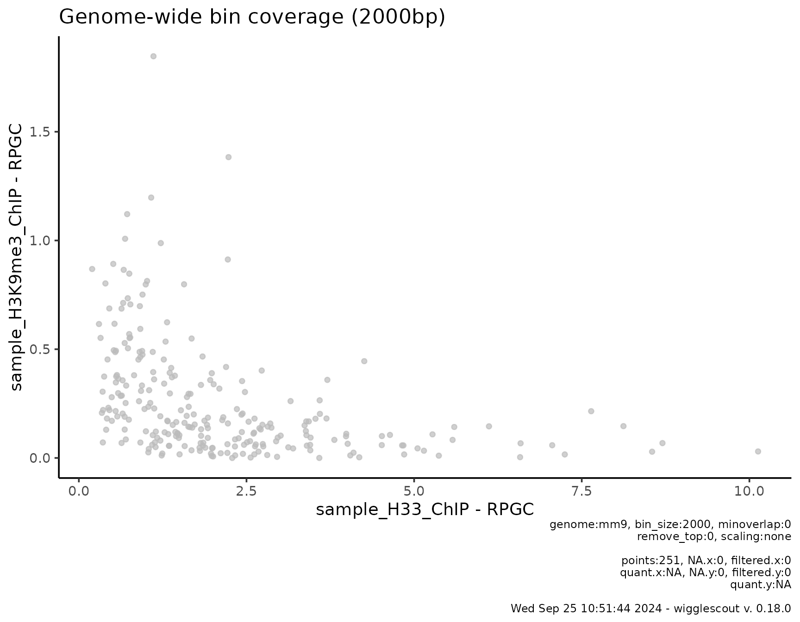
This is useful to see relationships between marks. In this case, bins where H3.3 signal is high, H3K9me3 signal is low and viceversa.
The same way as with plot_bw_bins_violin, it is possible
to specify a set of loci to highlight within the bins, and normalize to
given signals:
plot_bw_bins_scatter(
x = h33_chip,
bg_x = input_chip,
y = h3k9me3_chip,
bg_y = input_chip,
bin_size = 2000,
highlight = genes,
highlight_colors = "red",
highlight_label = "genes", # It is also possible to label the groups
norm_mode_x = "log2fc", # Each norm mode is provided separately
selection = locus
)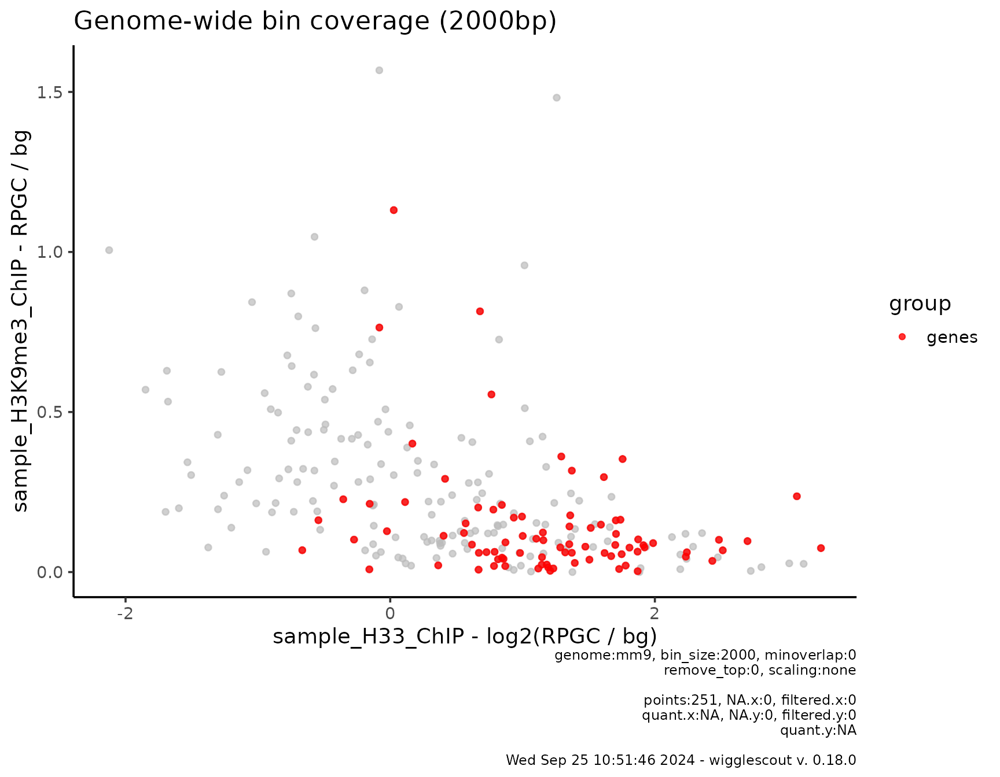
Locus-specific plots
It is also possible to look at the ChIP data in a more specific way.
For this, elsasserlib provides the following functions:
-
plot_bw_bed_summary_heatmap: Summarizes the values across a BED file, using name field as category. -
plot_bw_profile: Creates a profile plot across a set of loci. -
plot_bw_heatmap: Creates a heatmap across a set of loci.
Summary heatmaps
These plots are meant to provide a genome-wide overview of the signal across different biologically-relevant categories. They get a list of bigWig files and a BED file as input. Each bigWig file will represent a row in the heatmap, and each cell will be an aggregate value of the corresponding bigWig file in a given category in the BED file, for example:
# ChromHMM is a genome-wide annotation according to epigenetics marks. Each
# locus is tagged by a category. And the amount of categories must be limited.
# In this case, it is fifteen.
chrom_values <- import(chromhmm, format = "BED")
head(chrom_values)
#> GRanges object with 6 ranges and 2 metadata columns:
#> seqnames ranges strand | name score
#> <Rle> <IRanges> <Rle> | <character> <numeric>
#> [1] chr15 102602601-102606600 * | 12_Heterochrom 0
#> [2] chr15 102606601-102607600 * | 11_Repressed 0
#> [3] chr15 102615401-102615800 * | 15_Insulator 0
#> [4] chr15 102615801-102616800 * | 11_Repressed 0
#> [5] chr15 102616801-102626600 * | 12_Heterochrom 0
#> [6] chr15 102626601-102627600 * | 11_Repressed 0
#> -------
#> seqinfo: 1 sequence from an unspecified genome; no seqlengths
plot_bw_loci_summary_heatmap(
c(h33_chip, h3k9me3_chip),
loci = chromhmm,
)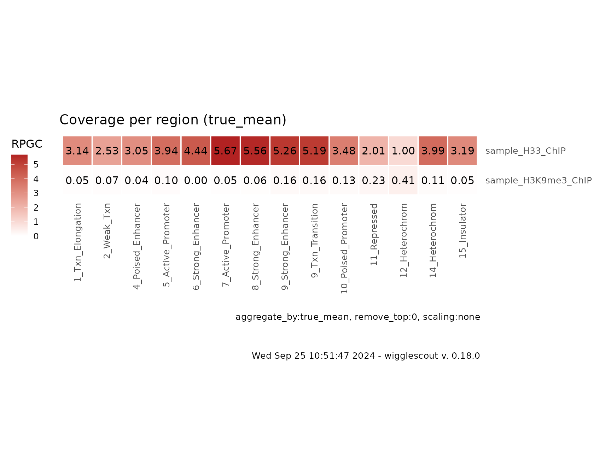
Since this example is reduced to a set of HOXC genes, you can see how H3.3 signal is high and H3K9me3 is generally low.
It is possible as in the previous types of plots to provide bigWig files as normalization / input tracks and use them in the same way as before:
plot_bw_loci_summary_heatmap(
c(h33_chip, h3k9me3_chip),
bg_bwfiles = c(input_chip, input_chip),
loci = chromhmm
)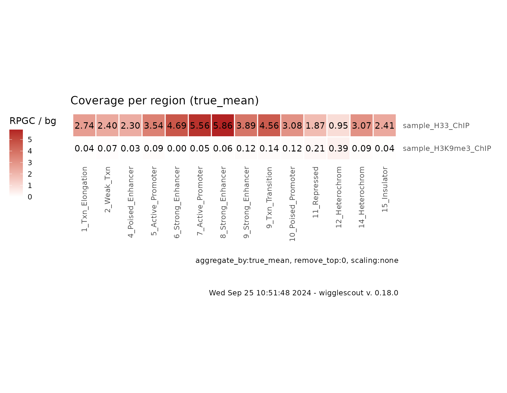
How the values are aggregated
Since this function is aggregating the values, it is possible to
specify the way the per-locus values are aggregated. Default is
true mean. What it means is that all the coverage
values are binned together and the mean is performed as if each category
is one big locus. Another possibilities are: mean of
means (aggregate_by = "mean"), which will
calculate mean coverage per locus and then the aggregate value will be
the mean of those mean values, and median of means
(aggregate_by = "median"). Median per-locus coverage values
tend to be noisy, so a median of means could be useful in some
cases.
plot_bw_loci_summary_heatmap(
c(h33_chip, h3k9me3_chip),
bg_bwfiles = c(input_chip, input_chip),
loci = chromhmm,
aggregate_by = "median" # Note this is a string value, not a function
)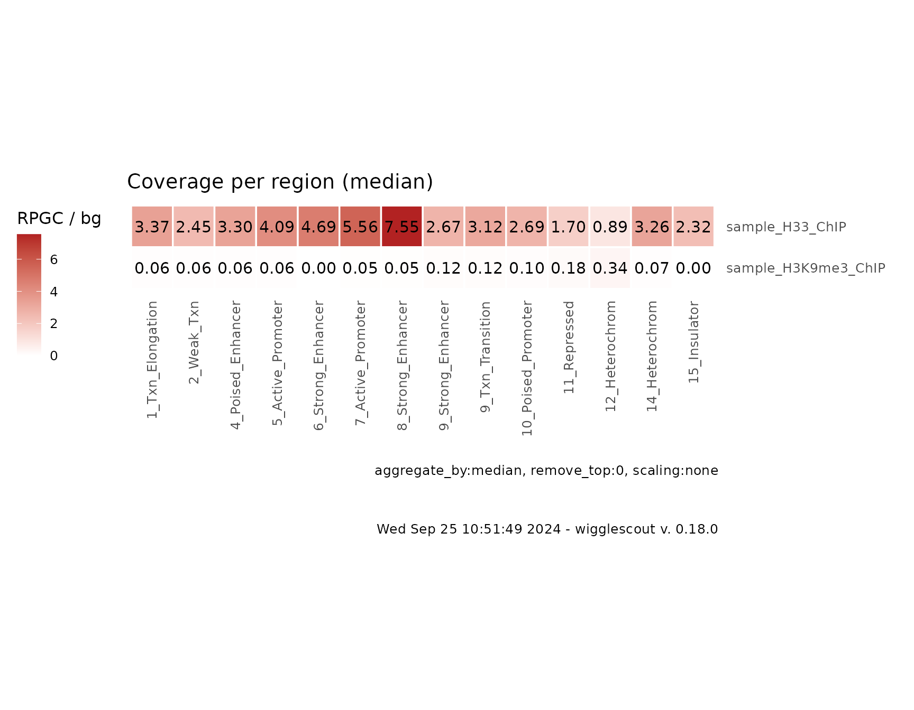
Profile plots
Another way to look at how the ChIP data looks is to summarize a
profile across a set of loci. In order to do that you can use
the plot_bw_profile function:
plot_bw_profile(
c(h33_chip, h3k9me3_chip, input_chip),
loci = genes,
labels = c("H3.3", "H3K9me3", "Input")
)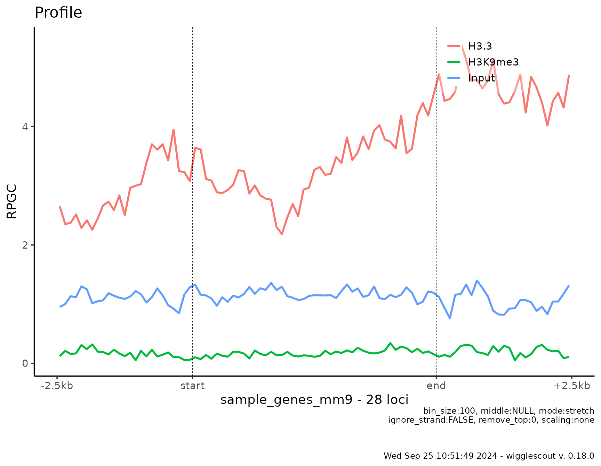
The default mode is called stretch, where start (3’ end)
and end (5’ end) of loci are aligned and the length of the
locus is stretched to a given pseudolength (middle
parameter). If this parameter is not given, the pseudolength will be
assigned as the median value of the length distribution of
loci, in an attempt to match a realistic length.
It is possible to align only 3’ ends, 5’ ends or center of loci, similarly to what formatting text alignment would do:
plot_bw_profile(
c(h33_chip, h3k9me3_chip, input_chip),
loci = genes,
labels = c("H3.3", "H3K9me3", "Input"),
mode = "start"
)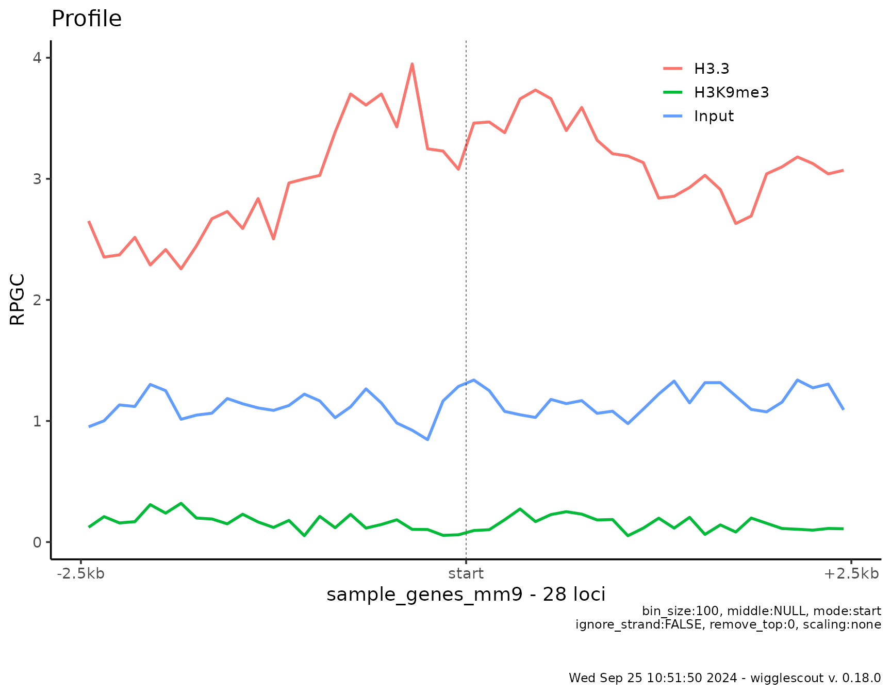
It is also possible to specify the upstream and downstream lengths:
plot_bw_profile(
c(h33_chip, h3k9me3_chip, input_chip),
loci = genes,
labels = c("H3.3", "H3K9me3", "Input"),
mode = "center",
upstream = 3000,
downstream = 3000
)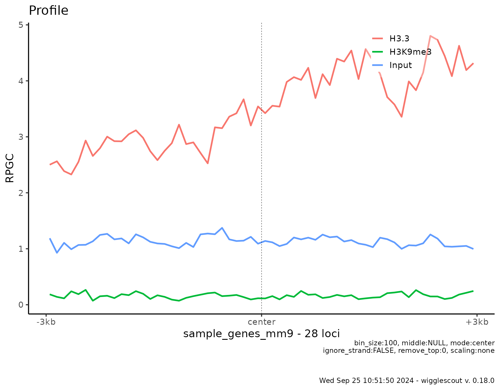
plot_bw_profile(
c(h33_chip, h3k9me3_chip, input_chip),
loci = genes,
labels = c("H3.3", "H3K9me3", "Input"),
mode = "end",
upstream = 7000,
downstream = 3000,
show_error = TRUE # Turn error estimates on
)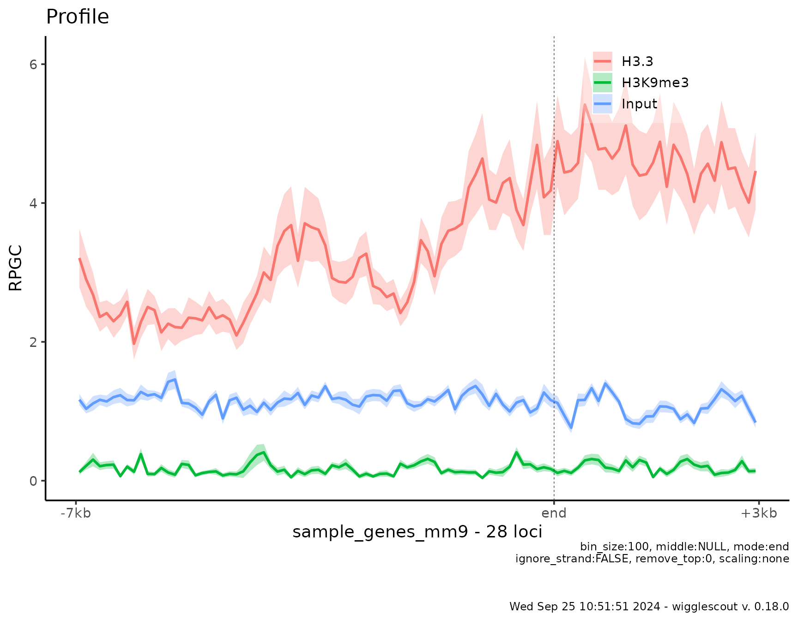
Heatmaps
Finally, it is possible to look at the profile across a set of loci in a per-locus way by looking at heatmaps.
plot_bw_heatmap(
h33_chip,
loci = genes
)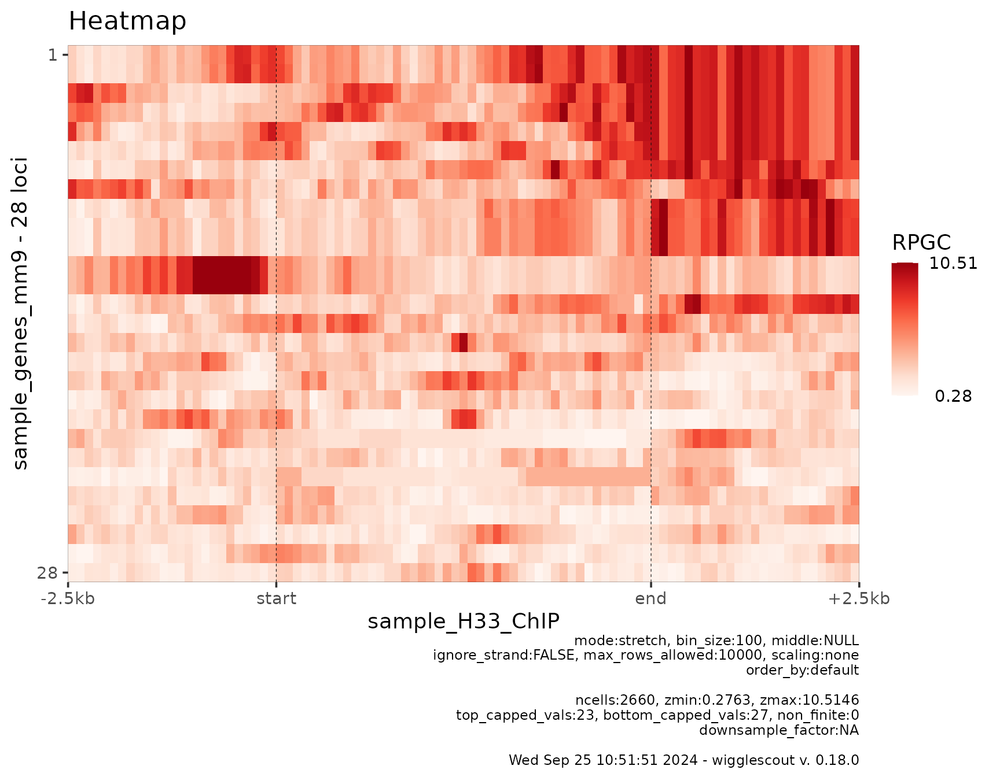
This gene annotation includes some variants of the same genes that overlap a lot, so some of the rows look very similar or even like duplicates.
Most of the parameters are shared between
plot_bw_profile and plot_bw_heatmap making it
possible to arrange them on top of each other later on, so it is
possible to align them in different ways:
plot_bw_heatmap(
h33_chip,
loci = genes,
mode = "start",
upstream = 2500,
downstream = 2500
)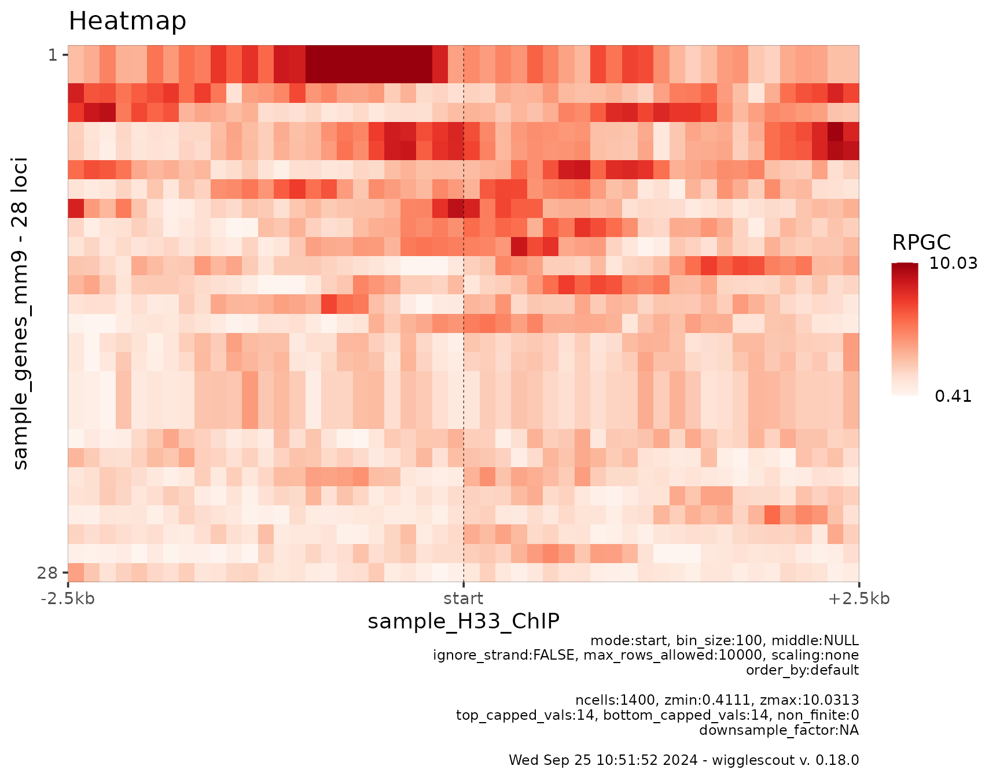
It is possible to specify bin_size to increase or
decrease resolution (this can also be done on profile plots):
plot_bw_heatmap(
h33_chip,
loci = genes,
mode = "start",
upstream = 2500,
downstream = 2500,
bin_size = 20
)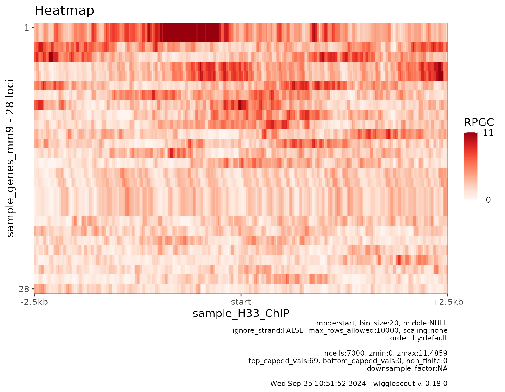
At this point, heatmap values are shown in order from maximum mean value across all the beans to lowest.
By default, colorscale is set to percentiles 0.01 and 0.99 of whole matrix range. You can set these values to fixed numbers. This is useful mostly to plot together several heatmaps with the same color scale. For example:
plot_bw_heatmap(
h33_chip,
loci = genes,
mode = "start",
upstream = 2500,
downstream = 2500,
bin_size = 100,
zmin = 2,
zmax = 10
)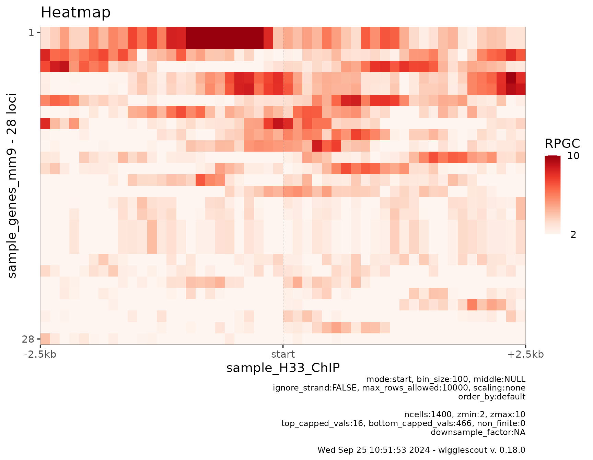
It is also possible to change the color of the heatmap using any
RColorBrewer available palette:
plot_bw_heatmap(
h33_chip,
loci = genes,
bin_size = 100,
cmap = "RdYlBu"
)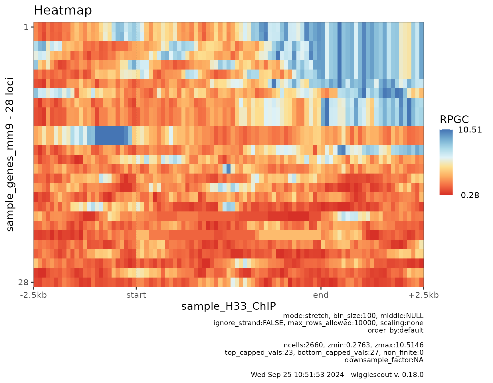
There is also a max_rows_allowed parameter that defaults
to 10000. This allows to plot large matrices by binning vertically the
heatmap and plotting the underlying mean associated, provided that a
screen or a reasonable screen will not be able to display all the data
points anyway. If the number of rows is larger than
max_rows_allowed, rows will be binned in a way that the
resulting plotted matrix will have max_rows_allowed height
and a warning will be shown. Since the matrix is not subsampled only,
but the underlying values averaged, this may result in a smoothened
effect in the image. This is a similar approach to how image resizing
works.
Customizing plots
All plotting functions return a ggplot object. This
means that essentially you can overlay any other data you want or
further customize the results. For example:
profile_plot <- plot_bw_profile(
c(h33_chip, h3k9me3_chip, input_chip),
loci = genes
)
profile_plot +
ggtitle("New title for the plot") + # Add a custom title
geom_hline(yintercept = 1, linetype="dashed") # Add a horizontal line on y=1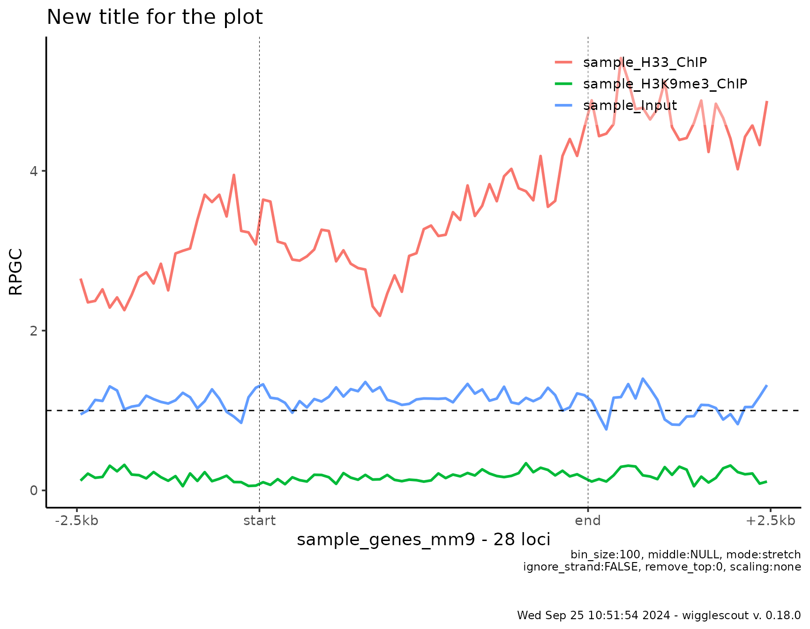
On performance and runtime
All these functions work on genome-wide data, and often you will want to run these on more than one bigWig file at a time. It is possible to run all of this in a regular laptop, however if resolution is too high, waiting times will raise to minutes and even hours, depending on the amount of files and the given resolution.
In a Intel i7 laptop, bins analyses for a single bigWig file in resolution around 10000bp tend to take a few seconds. 5000bp is still reasonable interactive time. For plotting under 5000 bp resolution you will need to wait quite some time and I would recommend running these in a script outside R environment.
Locus-based analyses runtime tends to be smaller since the amount of values to be calculated is smaller than genome-wide bins. An exception to this are ChromHMM plots, since these are also genome-wide bins, if only of different lengths and labeled with categories. Keep this in mind when plotting a large set of bigWig files. It will take some time as well.
Using multiple processors
As of version 0.2.0, wigglescout core functions support
future specifications using furrr library.
This means you can run the code in multiple R sessions:
# You just have to set the plan
library(future)
plan(multisession, workers = 2)
# Then run the functions just the same
bw_bins(c(h33_chip, input_chip),
bin_size = 50000,
genome = "mm9",
selection = locus,
norm_mode = "log2fc")
#> GRanges object with 11 ranges and 2 metadata columns:
#> seqnames ranges strand | sample_H33_ChIP sample_Input
#> <Rle> <IRanges> <Rle> | <numeric> <numeric>
#> [1] chr15 102550001-102600000 * | 1.423578 0.920439
#> [2] chr15 102600001-102650000 * | 1.166658 1.054456
#> [3] chr15 102650001-102700000 * | 0.734975 1.033551
#> [4] chr15 102700001-102750000 * | 0.930566 1.028487
#> [5] chr15 102750001-102800000 * | 3.198913 1.050770
#> [6] chr15 102800001-102850000 * | 2.064035 1.053755
#> [7] chr15 102850001-102900000 * | 2.240118 1.053838
#> [8] chr15 102900001-102950000 * | 1.246168 1.140229
#> [9] chr15 102950001-103000000 * | 2.212256 1.198468
#> [10] chr15 103000001-103050000 * | 3.816928 1.136733
#> [11] chr15 103050001-103100000 * | 3.168476 1.092466
#> -------
#> seqinfo: 35 sequences from an unspecified genome; no seqlengthsIt is advised against implementing future planning within library
function according to future
documentation:
Please refrain from modifying the future strategy inside your packages / functions, i.e. do not call plan() in your code. Instead, leave the control on what backend to use to the end user. This idea is part of the core philosophy of the future framework - as a developer you can never know what future backends the user have access to. Moreover, by not making any assumptions about what backends are available, your code will also work automatically with any new backends developed after you wrote your code.
How to find the best configuration
Parallelization in wigglescout setting is based on the
fact that operations on multiple files are done separately and
independently of each other. However, doing this requires some passing
of data back and forth, which means that if your bigWig files are large
(or the results you get from them, for instance, big
GRanges objects), or you don’t have many, you may suffer
the overhead without getting any benefit from it.
An easy rule of thumb is: swap from sequential (which is
the default) to multisession if you are running functions
on multiple files at once. It seems like there is benefit to do this
pretty much for any number of files larger than one.
However, adding more sessions does not seem to help a lot. Best guess is going for 2 or 4 workers. With 2 workers you already see a considerable reduction in time.
My expectation is that multicore may be faster. However
I have not benchmarked it, as it does not run within Rstudio.
sessionInfo()
#> R version 4.4.1 (2024-06-14)
#> Platform: x86_64-pc-linux-gnu
#> Running under: Ubuntu 22.04.5 LTS
#>
#> Matrix products: default
#> BLAS: /usr/lib/x86_64-linux-gnu/openblas-pthread/libblas.so.3
#> LAPACK: /usr/lib/x86_64-linux-gnu/openblas-pthread/libopenblasp-r0.3.20.so; LAPACK version 3.10.0
#>
#> locale:
#> [1] LC_CTYPE=C.UTF-8 LC_NUMERIC=C LC_TIME=C.UTF-8
#> [4] LC_COLLATE=C.UTF-8 LC_MONETARY=C.UTF-8 LC_MESSAGES=C.UTF-8
#> [7] LC_PAPER=C.UTF-8 LC_NAME=C LC_ADDRESS=C
#> [10] LC_TELEPHONE=C LC_MEASUREMENT=C.UTF-8 LC_IDENTIFICATION=C
#>
#> time zone: UTC
#> tzcode source: system (glibc)
#>
#> attached base packages:
#> [1] stats4 stats graphics grDevices utils datasets methods
#> [8] base
#>
#> other attached packages:
#> [1] future_1.34.0 purrr_1.0.2 wigglescout_0.18.0
#> [4] rtracklayer_1.64.0 GenomicRanges_1.56.1 GenomeInfoDb_1.40.1
#> [7] IRanges_2.38.1 S4Vectors_0.42.1 BiocGenerics_0.50.0
#> [10] ggplot2_3.5.1
#>
#> loaded via a namespace (and not attached):
#> [1] tidyselect_1.2.1 dplyr_1.1.4
#> [3] vipor_0.4.7 farver_2.1.2
#> [5] Biostrings_2.72.1 bitops_1.0-8
#> [7] fastmap_1.2.0 RCurl_1.98-1.16
#> [9] GenomicAlignments_1.40.0 XML_3.99-0.17
#> [11] digest_0.6.37 lifecycle_1.0.4
#> [13] Cairo_1.6-2 magrittr_2.0.3
#> [15] compiler_4.4.1 rlang_1.1.4
#> [17] sass_0.4.9 tools_4.4.1
#> [19] utf8_1.2.4 yaml_2.3.10
#> [21] knitr_1.48 S4Arrays_1.4.1
#> [23] labeling_0.4.3 curl_5.2.3
#> [25] DelayedArray_0.30.1 RColorBrewer_1.1-3
#> [27] abind_1.4-8 BiocParallel_1.38.0
#> [29] withr_3.0.1 desc_1.4.3
#> [31] grid_4.4.1 fansi_1.0.6
#> [33] colorspace_2.1-1 globals_0.16.3
#> [35] scales_1.3.0 SummarizedExperiment_1.34.0
#> [37] cli_3.6.3 rmarkdown_2.28
#> [39] crayon_1.5.3 ragg_1.3.3
#> [41] generics_0.1.3 httr_1.4.7
#> [43] rjson_0.2.23 ggbeeswarm_0.7.2
#> [45] cachem_1.1.0 stringr_1.5.1
#> [47] zlibbioc_1.50.0 parallel_4.4.1
#> [49] ggrastr_1.0.2 XVector_0.44.0
#> [51] restfulr_0.0.15 matrixStats_1.4.1
#> [53] vctrs_0.6.5 Matrix_1.7-0
#> [55] jsonlite_1.8.9 beeswarm_0.4.0
#> [57] listenv_0.9.1 systemfonts_1.1.0
#> [59] jquerylib_0.1.4 tidyr_1.3.1
#> [61] glue_1.7.0 parallelly_1.38.0
#> [63] pkgdown_2.1.1 codetools_0.2-20
#> [65] stringi_1.8.4 gtable_0.3.5
#> [67] BiocIO_1.14.0 UCSC.utils_1.0.0
#> [69] munsell_0.5.1 tibble_3.2.1
#> [71] pillar_1.9.0 furrr_0.3.1
#> [73] htmltools_0.5.8.1 GenomeInfoDbData_1.2.12
#> [75] R6_2.5.1 textshaping_0.4.0
#> [77] evaluate_1.0.0 Biobase_2.64.0
#> [79] lattice_0.22-6 highr_0.11
#> [81] Rsamtools_2.20.0 bslib_0.8.0
#> [83] SparseArray_1.4.8 xfun_0.47
#> [85] fs_1.6.4 MatrixGenerics_1.16.0
#> [87] prettydoc_0.4.1 pkgconfig_2.0.3